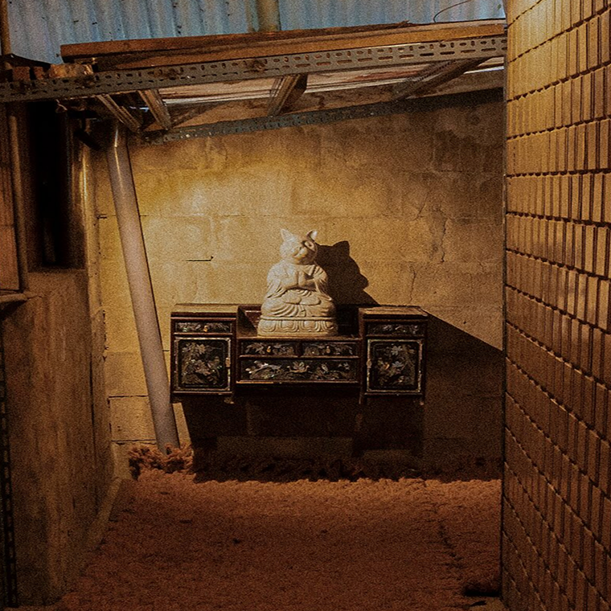
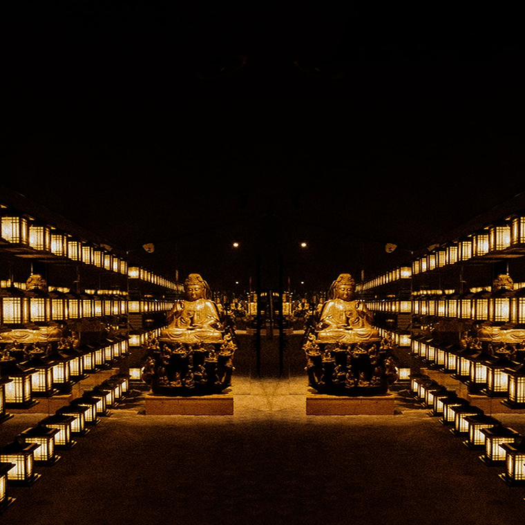
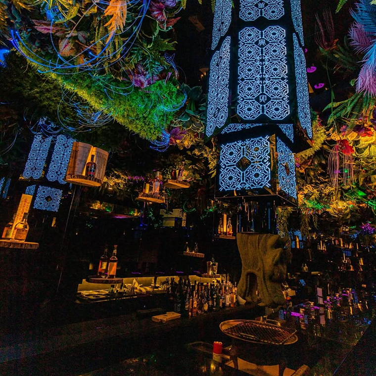
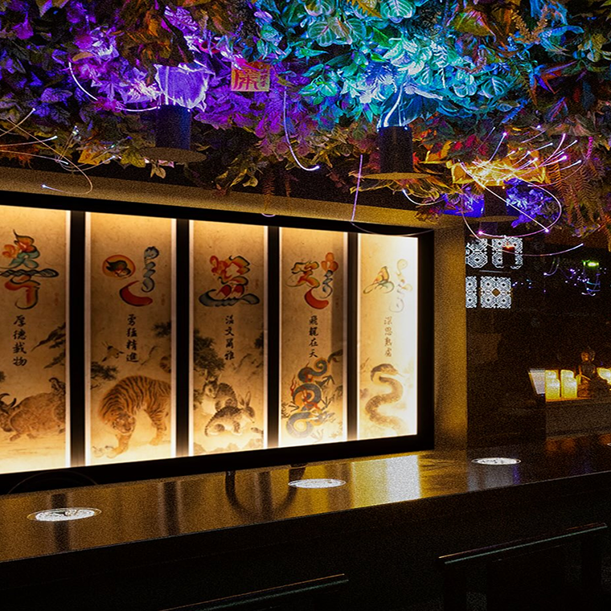
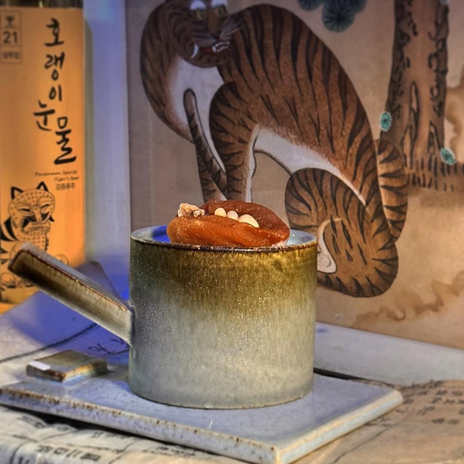

Bar
Zoosindang
If you’re looking to experience a Korean shrine atmostphere..
12.12.2025
Posted by Jiin Kang
This is, without a doubt, one of the most concept-driven pubs I’ve come across recently. You can immediately tell how much thought and investment went into the interior design. As soon as you step inside, you’re greeted by something resembling a cat Buddha, and the surrounding decorations evoke the atmosphere of a shrine. True to its name, the place feels like a sacred space—one where you happen to drink.
As you move further in, a corridor lined with Buddhas and dozens of lights unfolds before you. With bursts of smoke drifting through the space, there’s a moment where it genuinely feels like you’ve stepped into another world. So what is the interior like beyond that point?
 Once inside, you’re met with an ornate ceiling and a bar decorated with bold brush-calligraphy artwork and the twelve zodiac guardians. While the overall concept remains consistent, each area offers a slightly different visual experience, keeping the space engaging as you move through it.
 One thing you absolutely shouldn’t miss here is their zodiac-themed cocktails. Each drink is inspired by one of the twelve zodiac animals, and they’re just as impressive in taste as they are in presentation. If you’re not sure which zodiac sign you are, I’d recommend looking it up before you go—it makes the experience even more fun.
Zoosindang
Address | Seoul Yongsan-gu
Opening Hours
18:00 - 02:00 (Mon-Fri)
17:00 - 02:00 (Weekend)
Instagram | @zoosindang
About Curator

Jiin Kang
A marketer from Seoul, with a habit of discovering uncommon spots
Around here
Cafe
Braed o.o.o.o
A place where the internet becomes edible
1km from Iteawon
Bar
Chuoekgongan
A personal collection, curated like a museum
2km from Iteawon
Park
Hyochang park
Where the space feels just like a 404 page
4km from Iteawon
Stay Exploring
Join our free newsletter for curated Seoul finds.